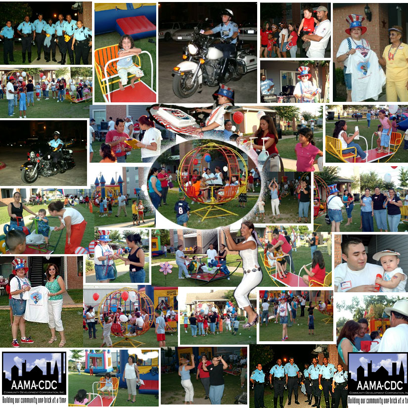

National Night Out.
August 3, 2004 · Community archive
Plaza De Magnolia hosted its annual National Night Out, bringing neighbors together to build relationships and support crime prevention.
The original event collage below captures an evening with residents and neighbors.
